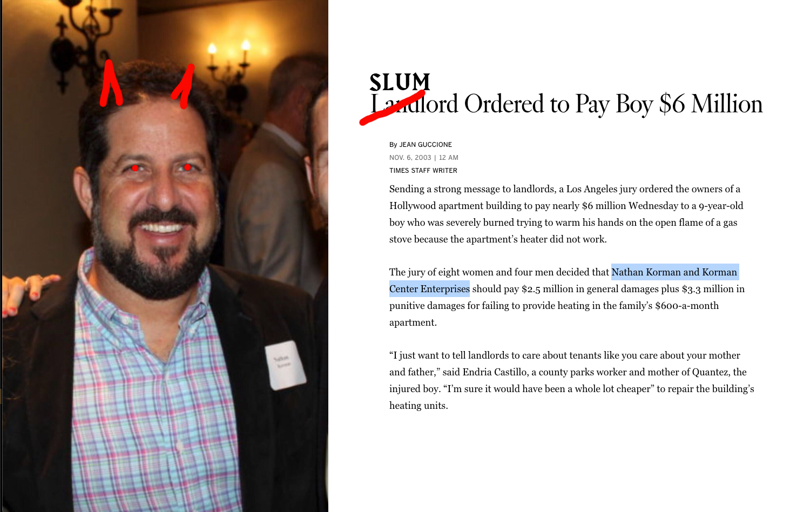

This art gallery opened in the Arts District before moving to Boyle Heights in 2016. Today, it is situated alongside similarly trendy galleries like Maccarone. (Its former space west of the L.A. River is now occupied by an upscale fashion boutique business.) Little Big Man counts several global corporations, such as Levi’s and Calvin Klein, among its clients—a roster that hints at its financial aspirations and illustrates just how far it is from being a valuable institution to the residents of Boyle Heights.
The owner of Little Big Man’s warehouse space, Nathan Korman, has been active in the real estate scene in Los Angeles for a long time in different parts of the city such as Hollywood and Downtown. He’s also been active in developing or flipping buildings in gentrifying neighborhoods across the city—and then not maintaining them in uninhabitable conditions, earning the title of a slumlord. This building alone boasts several Housing Department citations that shows how irresponsible and neglectful Korman is of his commercial tenants—even when they’re white, upwardly-mobile hipsters.

Another component of Korman’s business model—one that is intrinsic to all gentrification endeavors, public or private—is incentivizing the production of more real estate investment and development designed to serve the same clientele on whose presence Little Big Man Gallery relies. It is not a coincidence that Korman rents his space, once built, to hip, overpriced businesses in hopes of attracting more and more gentry to Boyle Heights.
Nor is it a coincidence that, just down the street from Korman’s perverse operation, millionaire real estate developer Mark Borman plans to flip another former manufacturing plant into Bridge & Corner, an upscale “creative” office space. It is not hyperbole to say that Borman makes displacement and dispossession his business; his investment vehicle The Borman Group promises to “consistently deliver space that meets the needs of a sophisticated creative user” (read: his firm’s website) as well as “the financial returns of an equally sophisticated investor” (read: a predatory speculator with free-flowing capital to spare) by specializing in “transformative markets early in the process” (of—what else?—gentrification.)
Borman’s plans to bring the wealthy and white to the area recently made him infamous to renters throughout the city when he tried—and failed—to evict a family from their home across the street from Bridge & Corner, where he planned to install an office parking lot (yes, really.) Because the family’s home was one of the rapidly dwindling numbers of rent-controlled buildings in Los Angeles, Borman relied on a con familiar to all those determined to displace: the Ellis Act. After an extensive grassroots defense campaign by the Los Angeles Tenants Union, a court denied Borman’s petition and left the family in place—for now. Word is, after licking his wounds, Borman is already preparing to re-file the eviction and double down on his plans to profit on the vulnerability of the Boyle Heights community.
Little Big Man, meanwhile, still operates in Boyle Heights thanks to their commercial landlord and the nearby commercial landlords that, together, seek to morph this area of Boyle Heights into an expensive extension of the Arts District.